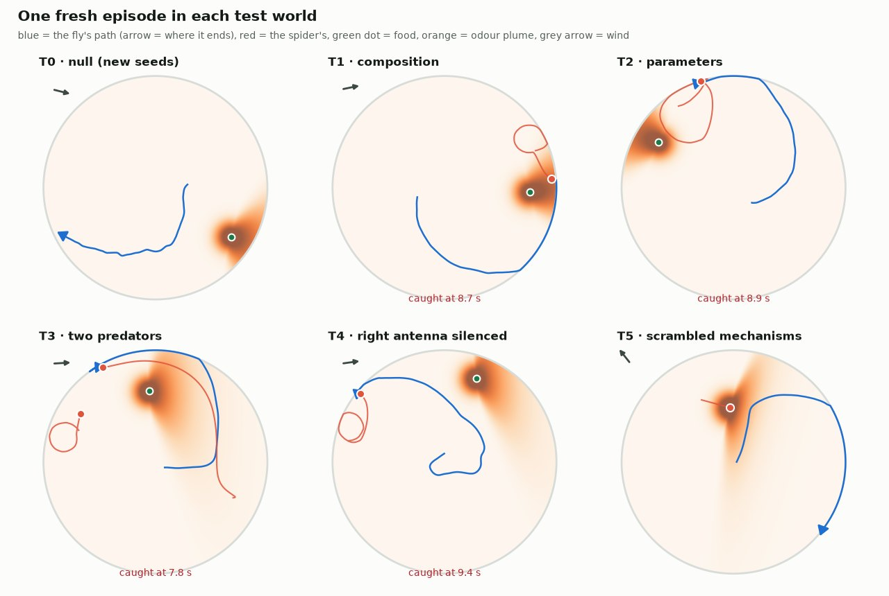

The short version
- Our first attempt, a JEPA with an explicit learned causal graph, failed in an instructive way. Its graph emptied out and its latent blocks became copies of one another. That failure pointed us toward Causal-JEPA.
- Causal-JEPA works in FlyWorld when the world is already split into entities. Given one slot per world factor it predicts 0.64 s ahead far better than chance, performs worse when the world's mechanisms are scrambled as a real world model should, and recovers 4 of the 5 true causal links.
- The fly's own brain holds the information needed. Slots read linearly from the brain's neurons recover almost the same causal structure as the true world factors.
- Finding those entities without labels is the remaining challenge. Unsupervised slot attention over the brain's activity collapsed into six identical slots, and four attempted fixes failed to separate them.
01 · The questionCan a brain learn a world model it can reuse?
An animal doesn't just react, it expects. A fly that has felt wind and smelt food knows the smell comes from upwind, so when the wind turns it knows where the plume will go. That internal picture of how things work is a world model. A good one predicts what happens next. A reusable one keeps working when familiar parts are recombined — wind and a spider together, when the fly has only ever met them separately.
A world model that is reusable in this way has to capture causes, not just correlations. It has to know that the spider follows the fly, not the smell, even when the two always appear together.
Hypothesis
A self-supervised, causally structured world model trained on a connectome-constrained fly brain's experience (1) predicts well in recombined worlds it never saw, and (2) has internal dependencies that match the simulator's true causal graph.
The second prediction is the strong one. A model can transfer well just by being a good predictor, but it can't recover the true causal graph by accident.
02 · First principlesWhat the pieces are
World models and self-supervised learning
A world model maps what an agent senses now to what it expects next. It needs no labels, because the future itself is the target: the agent sees frames \(o_{1..t}\), predicts something about \(o_{t+1..t+H}\), and is corrected when the future arrives.
Predict pixels, or predict meaning?
Reconstruction models predict every raw sensor value of the future, including pure noise. A JEPA (joint-embedding predictive architecture; LeCun 2022, Assran et al. 2023) first encodes each observation into a compact latent vector and predicts future latents. The model chooses what to keep, so it can ignore noise. That freedom is also a risk: a model that chooses what to keep can discard what matters, or collapse to a constant that is trivially predictable. JEPAs prevent collapse with a slowly updated target encoder and variance/covariance penalties (VICReg).
Causality in four ideas
- Structural causal model. Every variable has its own mechanism, \(x_i := f_i(\mathrm{pa}(x_i), \varepsilon_i)\), computed from its parents and noise.
- Causal graph. An arrow \(j \to i\) whenever \(x_j\) is an input to \(f_i\).
- Intervention \(do(x_j := c)\): replace one mechanism, like switching a fan off. Correlations can't predict what that does; a causal model can.
- Sparse mechanism shift (Schölkopf et al. 2021): when the world changes, usually only a few mechanisms change. A model made of separate mechanisms can adapt by changing only those. That is what makes it reusable.
Objects first
Recovering a world's true factors from raw observations is impossible in general without extra assumptions (Locatello et al. 2019). One powerful assumption is that the world is made of objects. Slot-based encoders such as Slot Attention split a scene into a set of entity vectors, one per object. Once the world is a set of entities, “which entity affects which” becomes a question a predictor can answer.
Connectome-constrained brains
FlyWire mapped an entire adult fruit-fly brain: about 139,000 neurons and 55 million synapses (Dorkenwald et al. 2024). Lappalainen et al. (2024) showed that a network whose wiring and synapse signs are fixed from a connectome, with only its physiology learned, predicts real neural responses. We use the same constraint.
03 · What we assumedAssumptions, stated up front
| Assumption | Why | What it could hide |
|---|---|---|
| Five factor blocks, known graph | Gives a ground-truth answer to score against | Real worlds are messier; success here is necessary, not sufficient |
| Surrogate connectome | Keeps the fly's regional structure at a trainable size | It is fly-like, not a real fly brain |
| Wiring and signs fixed | The defining constraint of connectome-constrained models | Real brains also rewire |
| Linear read-outs measure content | Simple and comparable | Non-linear content is missed, so numbers are lower bounds |
| Persistence is the baseline | Zero means no better than doing nothing | Nearly static factors give noisy scores |
04 · The worldFlyWorld: a world with a known answer
FlyWorld is a 100 mm dish simulated at 50 Hz in 12-second episodes. It is written directly as a structural causal model, so its true causal graph is known exactly. It has five factor blocks: wind (a 2D vector drifting toward a mean), odour (a plume blown downwind from a food drop, so its shape depends on the wind), predator (a jumping spider that wanders, stalks the fly within 30 mm and lunges within 7 mm), light (slow drift) and self (the fly's body, moved by its own commands and pushed by wind).
That gives 6 true edges out of 20 possible: the plume depends on the wind, the spider chases the fly, and the fly's body is affected by everything. There is also a deliberate trap. Odour and predator are correlated, because the fly goes to the food and the spider follows the fly — but the spider's rule never reads the odour.
What the fly senses: 108 channels
- Eyes: 2 × 48 brightness columns. Ambient light sets the background of all 96, and a spider is a dark patch. No looming signal is given; the brain has to notice the patch growing.
- Antennae: 2 × 4 odour channels.
- Johnston's organs: 2 wind channels, measuring the wind felt by the moving fly.
- Halteres: turning rate and speed.
Why the fly's behaviour is scripted
The fly moves by a hand-written policy: up the odour gradient, into the wind, away from looming shapes, plus a slowly drifting random wander. The spider is a state machine. We did this on purpose. This study asks whether a brain can learn a model of its world from what it senses, and that question is separate from learning to act. A fixed policy gives identical data for every model, interesting situations from the first episode, and a clean separation of perception from control. The fly's actions are still given to the world model as inputs, so it learns how actions change what happens next. Closing that loop is the natural next step.
Six test worlds
Models train in world A, where wind and spiders never appear together, and are then frozen and tested in six worlds. Two are calibration cells: T0 should score well, and T5 should score below T1.
| World | What changes | What it tests |
|---|---|---|
| T0 null | New random seeds only | Calibration: should do well |
| T1 composition | Wind and a spider together | Reusing mechanisms in a new combination |
| T2 parameters | Spider 2× faster, wind reversed, longer plume | Mechanisms as functions of their settings |
| T3 two predators | Two spiders | Reusing one mechanism twice |
| T4 antenna lesion | Right antenna silenced | A dead input |
| T5 scrambled | Mechanisms read the wrong parents | Calibration: a model that learned mechanisms must get worse |

05 · The brainA connectome-constrained network
The brain has 4,096 neurons wired by a surrogate connectome — a graph generated to match FlyWire's published statistics, such as region sizes, connection densities and the share of inhibitory neurons. As in a real fly, most input neurons serve vision (about 1,227, against 73 for wind). Each neuron's voltage leaks toward rest and is pushed by its inputs:
$$v_i \leftarrow v_i + \frac{\Delta t}{\tau_i}\Big( -(v_i - v^{\text{rest}}_i) + g\sum_j A_{ij}\, r_j + w^{\text{in}}_i\, s_{c(i)} + b_i \Big), \qquad r_i = \min\big(\mathrm{softplus}(v_i-\theta_i),\, r_{\max}\big)$$
Here \(r_i\) is the firing rate, \(\tau_i\) a time constant, \(\theta_i\) a threshold, and \(s_{c(i)}\) the sensory channel wired to neuron \(i\) if it is an input neuron. Connections \(A_{ij}\) exist only on connectome edges, and their signs are fixed by Dale's law: a neuron is either excitatory or inhibitory, never both. Training may tune strengths, time constants and thresholds, but never which neurons connect or the sign of any synapse.
06 · First attemptGraph JEPA, and why it failed
Our first model was our own design, which we call Graph JEPA: a JEPA whose latent is split into five blocks (one hoped-for block per factor), with an explicit learned causal graph between the blocks. One shared mechanism updates each block from its parents. Edges are sampled as hard 0/1 choices and pay an L1 penalty, so only edges that help prediction should survive. Everything, the brain's readout included, was trained end to end.
It failed in three ways:
- The graph emptied. All 20 candidate edges started at 0.27 and decayed together to 0.02. None ever pulled away from the rest.
- The blocks became copies. All five ended up encoding mostly light and the fly's own motion. No block held wind, odour or the spider on its own.
- It wasn't learning mechanisms. It predicted as well in the scrambled world T5 (skill 0.144) as in T1 (0.146).
A series of one-change-at-a-time diagnostic runs showed why. Holding light constant made the blocks copy the next-easiest factors instead. Penalising correlation between blocks didn't separate them. We found and fixed a real wiring bug — the wind sensor reached no neuron, because haltere inputs had overwritten the wind input neurons — which put wind into the brain but changed nothing else. Most tellingly, hard-wiring every intervention to its correct block (oracle routing) still produced copies, and even supervising each block with its factor's labels produced no graph edges.
The lesson
The causal machinery sat downstream of a latent that was learned only by prediction, and five copies of the easiest signal predict themselves perfectly. With no distinct entities, there is nothing for a causal graph to connect. The representation has to be split into entities first.
07 · Causal-JEPAAn object-centric causal world model
Causal-JEPA (Nam, Le Lidec, Maes, LeCun and Balestriero, ICML 2026) learns a world model over a set of frozen entity slots. There is no explicit graph. Instead, causal structure is forced in by masking whole entities.
How it learns
Each frame is a set of slot tokens, one per entity, plus two auxiliary tokens: the fly's action and its proprioception. The model sees 5 history frames and predicts 3 future frames, with a bidirectional transformer attending over every token of every frame. Two kinds of token are hidden: all future slot tokens (actions stay visible, as a planner would supply them), and the whole history of \(|M|\) randomly chosen entities, except their first frame, which is kept as an identity anchor. A hidden token is replaced by a projection of that entity's anchor state plus a time embedding, and the loss is the squared error on every hidden token against the frozen slots themselves.
Why hiding an entity's past matters
If you can see an entity's past, the easiest way to predict its present is to extrapolate it. That shortcut is exactly what emptied Graph JEPA's graph. Hide the past, and the only way to reconstruct the entity is to use the other entities that influence it — so the model is pushed to learn interactions. With \(|M| = 0\) it is the paper's OC-JEPA baseline: object-centric, but with no causal pressure.
Three stages: where do the slots come from?
FlyWorld's brain sees no images, so we built the slots three ways, from easiest to hardest. This separates “can Causal-JEPA learn the structure?” from “can we find the entities?”
| Stage | Slot source | What it tests |
|---|---|---|
| A · oracle | The simulator's true factors, one slot per block | Upper bound: perfect entities |
| B · brain, read out | Each factor read out of all 4,096 neurons by one linear map fitted on world A, then frozen | Is the information in the brain, and is it usable? |
| C · brain, unsupervised | Slot attention over 39 groups of neurons, trained without labels, then frozen | Entity discovery from neural activity alone |
How we score it
Imagination skill compares the model's imagined future with the guess that nothing moves (persistence). One linear decoder, fitted once in world A, translates slots into the 17 true world-factor numbers:
$$\text{skill} = 1-\frac{\lVert f_{t+16} - M\hat s_{t+16}\rVert^2}{\lVert f_{t+16} - M s_t\rVert^2}$$
1 is perfect, 0 is no better than “the world froze”. To read a causal graph out of a model that has no explicit graph, we hide entity \(i\)'s history, then also hide entity \(j\)'s, and measure how much worse entity \(i\) is predicted:
$$D_{ij} = \frac{\mathrm{err}(i \mid \text{hide } i, j) - \mathrm{err}(i \mid \text{hide } i)}{\mathrm{err}(i \mid \text{hide } i)}$$
A large \(D_{ij}\) means the model relies on \(j\) to reconstruct \(i\). The transformer is bidirectional, so it can't tell cause from effect. The fair test is therefore whether large values fall on the 5 truly linked pairs out of 10, scored by AUC (0.5 is chance).
08 · ResultsIt works when the world is split into entities
Stage A — oracle slots, imagination skill (|M| = 1)
| Stage, masking | world A | T0 | T1 | T5 | T1 − T5 | Mechanisms? | Pair AUC | Top-5 |
|---|---|---|---|---|---|---|---|---|
| A, |M| = 0 | 0.644 | 0.639 | 0.305 | 0.253 | +0.052 | yes | 0.76 | 3/5 |
| A, |M| = 1 | 0.626 | 0.619 | 0.232 | 0.143 | +0.089 | yes | 0.80 | 4/5 |
| A, |M| = 2 | 0.626 | 0.614 | 0.308 | 0.247 | +0.061 | yes | 0.76 | 4/5 |
| B, |M| = 0 | 0.265 | 0.359 | 0.126 | 0.078 | +0.048 | yes | 0.64 | 3/5 |
| B, |M| = 1 | 0.251 | 0.322 | 0.115 | 0.035 | +0.081 | yes | 0.84 | 4/5 |
| B, |M| = 2 | 0.251 | 0.326 | 0.130 | 0.078 | +0.053 | yes | 0.76 | 3/5 |
| C, |M| = 1 | 0.111 | −0.013 | 0.095 | 0.063 | +0.032 | void | slots identical | |
“Mechanisms?” asks whether the model got worse in the scrambled world T5 than in T1, by more than 0.02. A model that learned how the world works must. One that learned surface statistics won't notice.
passes (T1 − T5 above +0.02)fails
A model must do worse in the scrambled world. Plain JEPA and every Graph JEPA variant fail, even with oracle routing and factor labels. Causal-JEPA passes with oracle slots and with slots read out of the brain. Stage C's apparent pass is meaningless, because its slots are copies.
True graph (child ← parent)
| wind | odour | pred | light | self | |
|---|---|---|---|---|---|
| wind | · | 0 | 0 | 0 | 0 |
| odour | 1 | · | 0 | 0 | 0 |
| pred | 0 | 0 | · | 0 | 1 |
| light | 0 | 0 | 0 | · | 0 |
| self | 1 | 1 | 1 | 1 | · |
Stage B, |M| = 1 · influence
| wind | odour | pred | light | self | |
|---|---|---|---|---|---|
| wind | · | 0.46 | 0.04 | 0.03 | 0.28 |
| odour | 0.41 | · | 0.05 | 0.01 | 0.15 |
| pred | 0.04 | 0.06 | · | 0.03 | 0.16 |
| light | 0.02 | 0.01 | 0.03 | · | 0.03 |
| self | 0.05 | 0.05 | 0.17 | 0.02 | · |
Rows are the entity being reconstructed; columns the entity whose history is also hidden; true pairs outlined. Stage B ranks 4 of the 5 true pairs on top — wind–odour, wind–self, predator–self and odour–self — missing only light–self. In stage C every value is about the same, because every slot is the same.
Three findings stand out.
- The scrambled-world test passes for the first time. No version of Graph JEPA ever managed it.
- The brain holds usable structure. Stage B's slots, read linearly out of an untrained connectome brain, recover the same interactions as the true factors.
- Masking adds causal pressure. \(|M| = 1\) gives the largest T1 − T5 drop and the best pair AUC in both stages, at a small cost in world-A skill.
Caveats on the good news
Direction isn't recovered, by design: the model learns which entities interact, not which causes which. Transfer is still limited — stage A falls from 0.62 in T0 to 0.23–0.31 in T1. And stage B used labels to build its slots, so it shows the information is in the brain, not that it can be found without supervision.
09 · InferenceWatching Causal-JEPA imagine
To see what the numbers mean, we ran the frozen \(|M| = 1\) models on fresh episodes they had never seen, in worlds they were never trained in. At every frame, each model takes the last 5 frames of slots and the fly's upcoming actions, imagines the next 0.64 s, and we decode that imagination back into the dish.
How to read the videos
Left, the dish from above: the plume (orange), food (green), wind (grey arrow), the fly (blue arrow) and the spider (red). Dashed black line: where the spider really goes over the next 0.64 s. Coloured dots: where each model imagines it will be, growing larger further ahead — violet is stage A (oracle slots), green is stage B (slots read from the brain). Top right: what the brain receives from its eyes. Middle and bottom right: true spider distance and sideways wind, against what each model imagined 0.64 s earlier.
10 · The unsolved stepFinding entities without labels
Unsupervised slot attention over the brain's activity produced six identical slots: light 0.98, self 0.63, odour 0.31, predator 0.28, wind 0.20 — the same mixture in every slot. We tried four fixes in parallel.
| Fix | Idea | Recon. error | Specificity | Outcome |
|---|---|---|---|---|
| Remove common mode | Subtract the shared components from every neuron group | 0.32 | −0.43 | No change |
| Linear decoder | A weaker decoder, so one slot can't rebuild everything | 0.96 | −0.41 | Too weak to learn |
| 3× longer training | 12,000 steps instead of 4,000 | 0.18 | −0.43 | Better reconstruction, still copies |
| All three | Combined | 0.91 | −0.41 | Still copies |
Specificity measures whether each slot holds its own factor and not the others. Positive means separated; negative means copies. One run looked like a success, with the linear decoder scoring 0.54 in T1. It isn't one: its T0 skill is only 0.08, its graph is at chance, and a model with identical slots can't genuinely do better in a new world than in the one it trained on.
Why slot attention fails on brain activity
Slot attention finds objects by grouping input tokens, as in an image where a spider occupies some patches and the background others. Groups of neurons don't divide up that way. Every group carries a mixture of light, self-motion, odour and the rest — mixed selectivity. With no grouping to find, the cheapest solution is for every slot to summarise everything.
11 · ConclusionsWhat we learned
Verdict
Causal-JEPA can learn a causal, partly reusable world model of FlyWorld from a fly brain's activity, if something first splits that activity into entities. With oracle or brain-read slots it passed the scrambled-world test and recovered most of the true interactions. Without labels, nothing we tried split the brain's activity into entities.
- Entities come first. Our explicit-graph model failed because its latent never separated into entities, and no causal machinery downstream could fix that.
- Entity masking is a workable causal signal. Hiding an entity's past forces the model to use the entities that influence it, and the dependencies it learns line up with the true graph.
- The connectome brain carries the information. A linear read-out of its neurons gives slots good enough for causal learning.
- Unsupervised entity discovery from neural activity is the open problem. Neurons mix many factors, so slot attention has no grouping to find. The split has to come from somewhere else.
Next steps
- Slot attention on raw sensory channels rather than neurons. There, entities really are localised: a spider covers some eye columns, and wind has its own channels.
- Close the loop. Let the brain's own outputs drive the fly, and use the world model's imagination to choose actions, so the fly learns by doing.
- Interventions that shape the encoder, so entity separation can be learned from experiment rather than given.